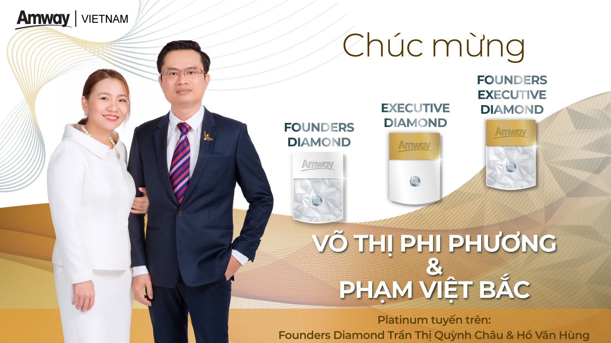
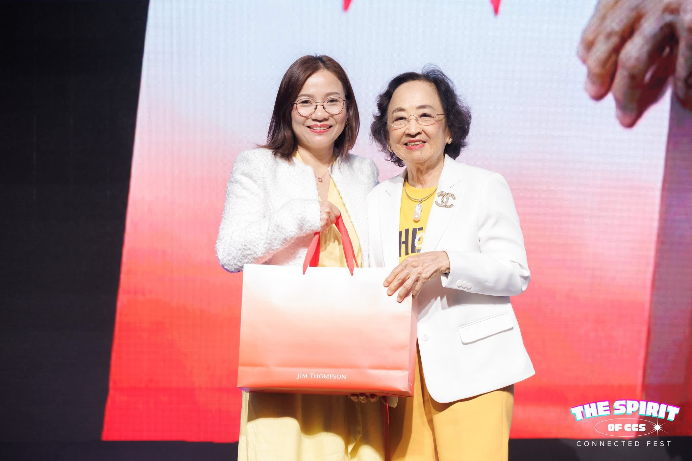
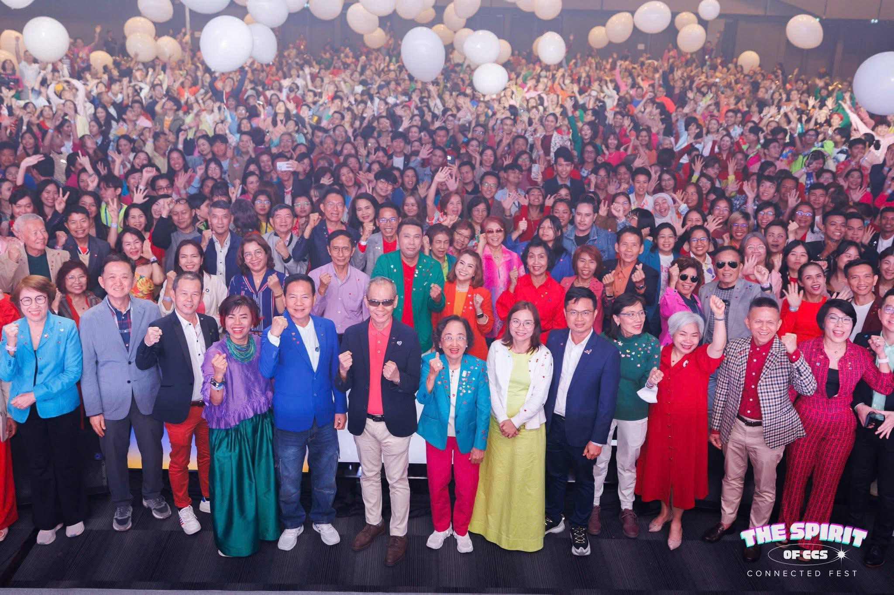

CEO tập đoàn nghìn nhân viên làm Amway
Chị Võ Thị Phi Phương là CEO cho công ty lớn tại Việt Nam, thu nhập tốt, cuộc sống tốt. Nhưng lý do chị lựa chọn Amway là vì TẦM NHÌN.
Tuyến trên cũng là bạn thân của chị, bán hàng và cố gắng bảo trợ chị làm Amway trong 3 năm. Nhưng chị chỉ dùng sản phẩm thôi vì biết đó là sản phẩm công nghệ sinh học.
Sau 3 năm, chị thấy bạn mình thay đổi về cuộc sống và thu nhập, và bạn cũng nói với chị: “Amway nó lớn lắm, nó lớn hơn những gì anh chị đang có. Em biết là anh chị đang có phòng khám nha khoa, chị có thu nhập rất là cao, cuộc sống chị rất là tốt, nhưng mà Amway nó lớn hơn những gì anh chị đang có, chị tìm hiểu đi!”.
Thế là chị Phương đi tìm hiểu Amway ở Thái Lan. Chị gặp được cô Aranong làm Amway năm 53 tuổi, 10 năm sau hệ thống 300 nghìn người, doanh số 90 triệu đô/năm.
Chị gặp được người mua lại hệ thống FC (thu nhập thụ động 1 tỷ/tháng) và người bán lại hệ thống đó. Đây chính là mấy chục triệu đô tiền mặt.
Và chị tự nhìn ra được tiềm năng của ngành hàng tiêu dùng, quyết định về Việt Nam làm Amway.
Chồng chị là anh Bắc nói chị: “Đường đường là 1 giám đốc mà bây giờ chạy nhông nhông ngoài đường làm Amway, đi bán kem đánh răng nước rửa chén giống như những cái bạn đó”.
Chị trả lời: “Phòng khám của mình 1 năm chưa làm được 1 triệu đô doanh số. Còn Amway là kinh doanh hàng tiêu dùng, ai xung quanh mình cũng đánh răng, rửa chén, gội đầu. Dân số Việt Nam gần 100.000.000 dân gấp đôi dân số Thái Lan. Bà Aranong bắt đầu năm 53 tuổi doanh số là 90 triệu đô. Để kinh doanh nha khoa có được 90 triệu đô thì phải có thêm 10 cái phòng khám nữa, nguồn lực đâu mà làm được như vậy?”.
Lý do nữa là vì bạn thân của mình, lúc đó thuê mặt bằng phòng khám là 20 triệu, muốn mua lại là 8 tỷ 500. Thời điểm đó bạn thân thu nhập trong Amway là 50 tới 60 triệu một tháng. Có một khoảng thời gian bạn về quê để chăm ba chồng bị bệnh, nhưng vẫn có thu nhập đều mỗi tháng.
“Nếu mình muốn có 60 triệu một tháng thì mình phải có 3 căn nhà. 8 tỷ này là 25 tỷ. Em là một người rất giỏi trong lớp và trong trường đại học, nhưng Châu chỉ cần lựa chọn kinh doanh này trước mình 3 năm thôi là đã có cái tài sản như thế này.”
Cho nên đối với chị Phương, cơ hội kinh doanh Amway là cơ hội cho cuộc đời của các anh chị. Vì nó là cơ hội cuộc đời nên là các anh chị phải hết sức cẩn trọng. Thật sự là nghiêm túc, thật sự là bỏ thời gian để tìm hiểu và làm nó!
